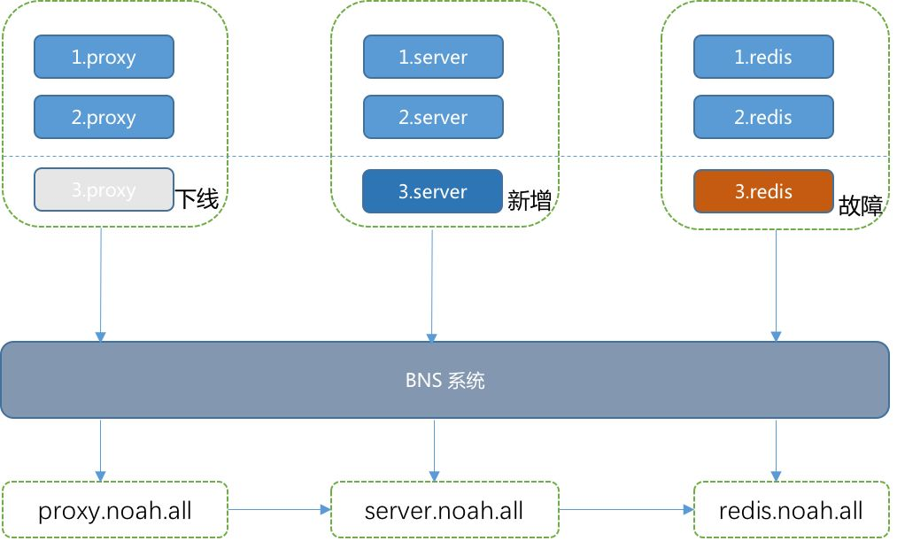

程序：我从哪里来？
作者简介
将问 百度云高级研发工程师
负责百度云Noah智能运维产品中名字服务和运维元数据的设计和研发，在分布式缓存、服务发现等方向有广泛的实践经验。
耶稣曾说过：“我虽然为自己作见证，我的见证还是真的，因我知道我从哪里来，往哪里去”。我是谁？我从哪里来？该往哪里去？一直到现在，这三个问题依然困扰着我们。在计算机程序的世界里，对于一个服务，同样存在这样的疑惑。那么，在百度的运维实践中，我们怎么去回答这几个问题呢？
干货概览
在计算机程序或者服务的层次上，我们来试着分析前面提到的几个问题。
问题
1.我是谁？
服务叫什么，服务包含了哪些实例，服务规模、部署情况、实例运行状况如何？
2.我从哪里来？
服务的上游有哪些，不同的上游流量如何分配？
3.我往哪里去？
服务的下游有哪些，不同的下游流量如何分配？
面对这样的问题，我们的答案是什么呢？
在百度的运维实践中，我们只需“BNS”就可以获得想要的答案。
BNS（Baidu Naming Service，百度名字服务）是百度云智能运维团队研发的一套分布式的名字服务系统，是百度云Noah智能运维产品中的一个重要基础服务系统。它为每一个服务赋予一个独一无二的名字，根据这个名字，我们就可以获取到这个服务的相关信息 ，这些信息包括：服务在机器上部署信息（机器IP，部署路径，服务配置，端口信息），服务的实例运行状况等其他重要信息。简单来讲，它提供了一个服务名到资源信息的一个映射关系。
在BNS系统中，服务单元表示一个服务的实例集合，一般以三段式的结构表示，比如：server.noah.all，server表示服务名，noah表示产品线，all表示机房名称，服务单元的名字在系统中是唯一的。
使用场景
在程序员的日常工作，常常面临以下的场景：
场景
场景一：我是一名OP工程师，负责几十个系统模块的运维，我常常需要登录部署服务的机器排查问题，但是只知道服务名，记不住那么多部署信息，怎么办？
场景二：我是一名RD工程师，我负责的服务需要扩容，我的服务是很多下游服务的依赖，服务的扩容怎么通知给下游模块？
场景三：我的服务部署实例有一个出现故障了，我想对下游服务屏蔽该故障实例，怎么办？
下面以一个简单的例子来说明，假设一个模块名是Server，它的上游是Proxy服务，下游是Redis服务，当出现变更或者故障时，如何让上游感知到呢？

当新增上线实例、下线摘除实例或者实例发生故障时，BNS系统通过部署在机器上的客户端实时感知到实例的状态变化，同时新增和删除实例的变更情况会立即同步到分布式的缓存系统中，这样用户通过一个BNS名字就可以感知到下游的实例变化。
对应上面几个场景，BNS提供了以下的解决方案：
场景一：用户想登录Proxy模块的第一个实例，可以通过ssh 1.proxy.noah.all.serv 方式登录。
我们基于BNS开发了nsswitch的扩展，并且修改了/etc/nsswtich的配置文件:
hosts files dns bns
在主机需要解析1.proxy.noah.all.serv 的时候，一般会直接或者间接的调用glibc提供的gethostbyname_r函数，而glibc在实现gethostbyname_r时，会按照nsswitch里配置的顺序files->dns->bns顺序进行处理，这样就实现了通过BNS登录机器。
场景二：Server模块扩容，希望上游及时感知到下游模块的变更。
用户在BNS上进行Server模块的扩容，模块实例变化信息会立即同步到BNS系统中的分布式缓存，在全网任意一台机器上，通过查询就能实时获取到实例变化的详情。
场景三：Redis模块3.redis.noah.all实例故障了，希望对上游屏蔽该实例。
通过部署在机器上的客户端感知到实例的状态变化（比如实例状态由0变成-1，即正常变成非正常），并将数据同步到系统中的分布式缓存，上游模块可以通过查询redis.noah.all的实例状态结果，主动过滤非正常的实例，也可以在BNS系统中发起屏蔽故障实例的操作，在查询过程中会自动过滤该故障实例。
在下一节中将具体介绍BNS系统的整体架构。
基本架构
BNS系统主要包含几个部分：流量接入层，Web Server，存储层，代理客户端。

作为一个底层的基础服务，BNS系统每天的访问量近千亿次，这对系统的可用性提出了很高的要求，因而系统需要在各个层面有完善的容灾能力和流量管控能力。
系统通过HTTP接口对外提供变更服务，用户通过Web页面或者接口进行服务或实例信息注册。为了保证平台稳定和安全的运行，需要对非法和异常请求进行拒绝，在流量接入层(Proxy)端提供了以下两个功能：
流量鉴权：每一个服务组、服务单元、实例的注册都需要进行权限验证，用户只有申请了合法的Token才能允许访问，另外系统还提供了白名单等其他的鉴权方式。
配额限流：针对产品线、用户、IP提供一定的配额，当请求的数量超过配额，就会拒绝响应的请求，并提示用户Quota超限。
Web Server提供用户进行各类BNS变更的接口，承担了BNS系统的大部分写入流量，采用分布式多地域的部署方式，可以避免单实例、单机房的故障对可用性造成的影响。
这里主要包含数据库和Cache层两个部分。
数据库：采用MySQL存储，采用主从集群部署、读写分离的方式。
Cache层：是BNS系统自研的一个缓存模块，缓存了全量的BNS系统数据，采用多地域部署的方式，它主要功能是降低数据库的查询压力。
BNS系统主要包含两个客户端：查询客户端和健康检查客户端，我们分别用Naming Agent和Check Agent来代指两个。
客户端部署在所有的机器上，并提供命令行工具和丰富的SDK以及各类插件，方便用户在各个场景使用。
Naming Agent：提供BNS的查询功能，用户可以根据一个名字（服务组、服务单元、实例）就能得到详细的服务信息。Naming Agent与Cache层的数据交互，采用推拉结合的方式，Naming Agent主动拉取数据和Cache模块推送变更数据，同时Naming Agent客户端会将查询过的数据置于本地缓存中，以此降低Cache层的查询压力。
Check Agent：提供BNS实例的健康检查功能，用户通过在Web页面对每一个实例配置健康检查的方式，机器上的Check Agent会主动探测所有实例的运行状况，并将健康检查的结果上报给Cache层，同时更新数据库内容。
BNS系统满足服务间交互中常见的的资源定位、IP白名单维护等需求，也可以用于机器列表查询，使用场景包括机器列表查询、服务定位、白名单维护、数据库智能授权等，解决了程序“我是谁？我从哪里来？该往哪里去？”的问题。
今天我们一起聊了百度云Noah智能运维产品中的BNS系统，目前系统还在持续迭代和优化中，若您想进一步了解BNS问题，欢迎大家积极留言。


↓↓↓ 点击"阅读原文" 【了解更多精彩内容】